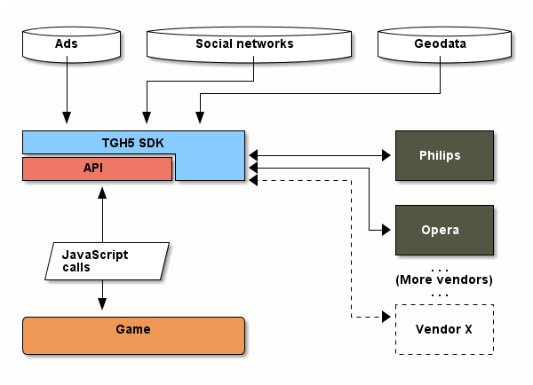

TGH5 SDK
© 2013 transgaming Inc. And its affiliates. All rights reserved.
Registered trademarks and logos property of their respective owners.
Table of Contents
1 Rationale
TransGaming is the world's leading provider of game services for the TV. TransGaming's goal is to reduce the complexity of deploying to multiple platforms by providing game developers with an SDK that provides seamless integration of content in the diverse TV market.
TGH5 SDK provides the game developer with means of service abstraction. The goal of the SDK is to provide an interface between the TGH5 services such as advertisement, user profiles, locale, persistent storage on one hand and the games deployed to the TransGaming game services on the other.
The diagram below illustrates the role of the SDK in the TransGaming game services deployment.

2 API
| API | Description | Mandatory / Optional |
|---|---|---|
| Ads API | an API that delivers ads to the game | Mandatory |
| Language setting API | allowing setting of language to current app. Selection of language in one of the TG apps affects all TG apps as the default language | Mandatory |
| Reporting API | allowing unified usage data collection and reports | Mandatory |
| Subscription API | identifying if the user is a non-subscriber and if the game is free or demo for non-subscribers and executes demo/free flows accordingly | Mandatory |
3 Development Environment Setup
The SDK package includes an archive containing JavaScript files TGH5.js and TGH5.min.js. There are several other assets the SDK uses internally.
To set up the development environment unpack the archive to the directory
of your development site. Include TGH5.js in HTML file(s) alongside the game;
both absolute and relative paths can be used. SDK refers to the location of
TGH5.js as sdkHome. The game may be required to adjust this setting when
calling TGH5.init() function.
<script src="../SDK/TGH5.js" type="text/javascript"></script> <script type="text/javascript"> TGH5.init("My-Game", { }, { sdkHome: "../SDK/" }).done(function (api) { // SDK successfully initialized }).fail(function (error) { console.log(error); }); </script>
When the game is ready for production, replace TGH5.js with TGH5.min.js to reduce the application size.
Please review the demo projects for additional examples.
4 Recommended Directory Structure:
/ |- SDK | |- TGH5.js | |- TGH5.min.js | |- media | | |- out.mp4 | | |- out.ogv | | +- out.webm |- MyGame1 (develop your game here) | |- MyGame.html | +- MyGame.js +- MyGame2 (develop your second game here) |- MyGame.html +- MyGame.js
We anticipate the need for settings specific to the platforms targeted (e.g. Philips, Panasonic, Samsung.) Hence, you may need to account for the lack or divergence in provided functionality. Thus, we recommend that the game be designed as having two parts: the generic part, which would be reused on every platform and the configuration settings, wich would change according to the targeted platform.
5 Api class
When this guide uses Api.foo (note capitalization), it means static
method foo defined on Api class. api.foo is the instance method of api.
5.1 General Functions
5.1.1 init
Signature:
Api.init(productId: string, productSettings?: any, overrides?: any): IDefered
Example:
TGH5.Api.init("Your-Game-Id").done( function (api) { /* do something with api here */ });
TGH5.Api.init(
"Your-Game-Id",
{ supportedLanguages: ["en", "ru"] }).done(
function (api) { /* do something with api here */ });
TGH5.Api.init(
"Your-Game-Id",
{ supportedLanguages: ["en", "ru"] },
{ sdkHome: "../TGH5-SDK", logging: false }).done(
function (api) { /* do something with api here */ });
TGH5.Api.init(
"Your-Game-Id",
{ supportedLanguages: ["en", "ru"], page: "help" },
{ sdkHome: "../TGH5-SDK", logging: false }).done(
function (api) { /* do something with api here */ });
The function should be called before any interaction with the SDK by a page. The function returns a deferred object, which is in many ways similar to Deferred from jQuery library. This deferred object will execute your success and error callbacks once the operation is completed.
Success callback receives the initialized api instance that is used for invoking all other SDK methods.
| Arguments | Type | Optional | Description |
|---|---|---|---|
productId | string | no | The identifier for your game. |
productSettings | any | yes | These are the settings that developers provide to SDK. At present, the only required setting is the supportedLanguages, which must be an array of language codes the game supports. You can also supply page key set to the name of the page you wish to appear in statistics report. This setting only makes sense for multi-page applications. For example, if you were to display the "help" page in your game by navigating away from the original game to a different HTML page, you would still need to initialize the SDK on the "help" page and to pass it { page: "help" } in init(). Page names are constructed as if they were UNIX-style paths. |
overrides | any | yes | Use this parameter to override some of the SDK default behavior. The detailed information on available options is listed in the Configuration section. |
5.1.2 exit
Signature:
api.exit(): void
Example:
api.exit();
Terminates the game in the way most appropriate for the given browser and deployment. Do not display postRoll ad before exiting this function will display the postRoll ad for you.
5.1.3 inDemoMode
Signature:
api.inDemoMode(): bool
Example:
if (api.inDemoMode()) newLevel.available = false;
Depending on the deployment and kind of user's subscription, the game may be requested to run in "demo" mode with limited functionality. Call this function to determine if the "demo" mode was requested.
5.2 Ads API
5.2.1 reportPageView
Signature:
api.reportPageView(page: Page): void
Example:
api.reportPageView(TGH5.Reporting.Page.GameMenu);
Call this function whenever the game changes to either of the following screens:
TGH5.Reporting.Page.LanguageWhen the game prompts player to select the language of the game.TGH5.Reporting.Page.PromotionWhen the game offers the player to try a different game.TGH5.Reporting.Page.LeaderboardsWhen the game displays high-scores screen.TGH5.Reporting.Page.GameMenuWhen the game displays the game menu.TGH5.Reporting.Page.LoadingWhen the game displays the loading screen.TGH5.Reporting.Page.ProfileWhen the game displays the player's profile page.TGH5.Reporting.Page.HelpWhen the game displays the game manual.TGH5.Reporting.Page.MainMenuWhen the game shows the main menu (portal or equivalent game-selection screen).
| Arguments | Type | Optional | Description |
|---|---|---|---|
event | Page | no | One of the values defined on the TGH5.Reporting.Page class. the path property of Page objects is the date reported to Google Analytics as page view. |
5.2.2 requestModalAd
Signature:
api.requestModalAd(event: string): IDeferred
Example:
api.requestModalAd("preRoll").done( function () { /* continue with the game flow */ });
Call this function whenever the game is ready to display a video ad or promotion screen. Note that it is up to the SDK to either display or to skip an ad or promotion.
Whenever an ad is displayed, the player cannot interact with the game in any way. The game must be prepared to pause at this time.
In the way very similar to init, this function returns a deferred object. An application should wait for ad completion before continuing.
| Arguments | Type | Optional | Description |
|---|---|---|---|
event | string | no | There are these events defined: "preRoll", "inGame" and "postRoll". You would dispatch them before launching the game during the game and before exiting. Note that there is no guarantee that the video will be actually displayed. This depends on the platform, where the game is deployed. |
5.3 Language API
5.3.1 preferredLanguage
Signature:
api.preferredLanguage(): IDeferred
Example:
api.preferredLanguage().always(
function (language) {
/* Update the UI to use the selected language */
});
Call this function to select the language which best suites player's location, deployment preferences and the player's previous choice. This language is guaranteed to be one of the languages the game supports as it is chosen from productSettings. The language codes follow that of ISO 639-1 standard (two characters).
5.3.2 changePlayersLanguage
Signature:
api.changePlayersLanguage(newLanguage:string): void
Example:
if (confirm("Should game text display in English?")) api.changePlayersLanguage("en");
Stores the language selected by the player for future launches of the game.
6 Configuration
SDK has a set of configuration options, which take care of various aspects of its functionality. Some of them may be overridden while testing. Note that overriding is not supported in production.
Below is the illustration of some settings you may wish to override and their possible values:
TGH5.Api.init(
// The productId, will be specific to your game.
"Your-Game-Id",
// Additional game settings.
{ supportedLanguages: ["en", "ru"] },
{
// Location of TGH5 SDK relative to HTML page with your game
sdkHome: "../TGH5-SDK",
// How to print debugging info
logging: { level: TGH5.LogLevel.Debug, console: "overlay" },
// Does the SDK require the game to run in demo mode
inDemoMode: false,
// Where should the SDK redirect after exiting the game
exitUrl: "about:blank",
// When (and how) should the ads be displayed
ads:
{
// How to display the ads before the game
preRoll: true,
// How to display the ads during the game
inGame:
{
internalPromo_Galapago: 10,
none: 2
},
// How to display the ads upon game exit
postRoll: false
},
// What languages does the SDK support
languages: ["en", "ko", "ru"],
// Reporting settings
reporting: false
).always(function (api) { /* Game initialization code */ });
6.1 Fields
Below are the fields you can expect to be in the configuration.
The format of the sectioning is as follows:
6.1.1 logging
Type: bool | number | { level: number; console: string; }
This field is true if the SDK was compiled with debugging enabled.
This setting is equivalent to only outputting the error messages recorded
by SDK. If it is false, then no messages are printed.
If set to a number, then numbers 0 through 4 have the following meaning:
(TGH5.LogLevel enum provides mnemonics for these values)
TGH5.LogLevel.Nothing (0)Print nothing.TGH5.LogLevel.Error (1)Print error messages only.TGH5.LogLevel.Warn (2)Print errors and warnings.TGH5.LogLevel.Log (3)Print errors, warnings and logs.TGH5.LogLevel.Debug (4)Print everything.
Field console, accepts the following values:
"overlay"Creates an HTML element, placed on top of the page and prints the messages there."native"Uses the native browser's console (window.console).
6.1.2 inDemoMode
Type: bool
This field is true if the game needs to run in the mode with limited
functionality.
6.1.3 ads
Type: { preRoll: *; inGame: *; postRoll: * }
Settings for displaying advertisement before, after and during the game.
- preRoll
Type:bool | Hashtable[string, number]When set to
falsewill prevent displaying advertisement before the game.
- inGame
Type:bool | Hashtable[string, number]When set to
falsewill prevent displaying advertisement during the game.
- postRoll
Type:bool | Hashtable[string, number]When set to
falsewill prevent displaying advertisement after the game.
6.1.4 sdkHome
Type: string
The location of the SDK's root directory. You may specify this in several ways. Choose the most appropriate for your development process.
- Relative to HTML file embedding the SDK's JavaScript.
For example, if you embedded the SDK using this code:
<script src="../TGH5.js"></script>
then you need to specify
..for this field. - If you are serving the SDK from a location unrelated to the HTML page
where it is embedded, for example:
<script src="http://localhost:8080/TGH5.js"></script>
then you need to specify
http://localhost:8080/for this field.
The idea is that this path is resolved relative to the HTML page that loads the SDK, all conventions used in path names should be applicable here as well.
6.1.5 platformLangluages
Type: string[]
The languages that the platform supports in order of most to least preference.
6.1.6 reporting
Type: bool | Hashtable[string, any]
The settings for Google Analytics service. If set to false will prevent
analytics from being sent.
However, if this is a hash-table, then it may contain the following keys:
- analyticsId
Type:stringThis is the Google Analytics id, usually it looks something like: "UA-XXXXXXXX-X".
- site
Type:stringThe site, as reported to Google Analytics.
- virtualPageRoot
Type:stringThe prefix to prepend to all pages reported from this site. The rules for prepending follow that of UNIX file system, after normalization.
- initParams
Type:Hashtable[string, any]List of additional paramters to pass to the Google Analytics tracker upon initialization. An important argument is the
cookieDomain. When set to "none" will allow reporting from the locally deployed pages.For the exhaustive list of parameters see Google Analytics API.
6.1.7 exitUrl
Type: string
The URL to navigate to when exiting. See Api.exit() for more info.
7 IDeferred interface
IDeferred interface offers the methods listed below. Note that since all of
them return an IDeferred in their turn, you can chain one method call
to another.
The IDeferred returned from the chained method is handling the same task
as the one to which you added the previous handler(s).
7.1 always
Signature:
deferred.always(...callbacks: { (...args: any[]): void; }[]): IDefered
Example:
// api.requestModalAd() returns an IDefered api.requestModalAd("preRoll").always( function () { /* Called when deferred is either resolved or rejected */ });
In the example above Deferred is a hypothetical concrete implementation
of IDefered interface.
This guide refers to the function you pass as arguments to IDefered
methods as handlers.
| Arguments | Type | Optional | Description |
|---|---|---|---|
...handlers | () => any | no | Number of handlers to be called when IDefered is either resolved or rejected. |
7.2 done
Signature:
deferred.done(...callbacks: { (...args: any[]): void; }[]): IDeferred;
Example:
// Api.init() returns an IDefered TGH5.Api.init("ProductId").done( function () { /* Called when deferred is resolved */ });
done() handlers are called when the IDeferred was resolved (completed
the task successfully).
| Arguments | Type | Optional | Description |
|---|---|---|---|
...handlers | () => any | no | Number of handlers to be called when IDefered is resolved (finished the task successfully). |
7.3 fail
Signature:
deferred.fail(...callbacks: { (...args: any[]): void; }[]): IDeferred;
Example:
// api.requestModalAd() returns IDefered api.requestModalAd("inGame").done( function () { /* Called when deferred is rejected */ });
fail() handlers are called when the IDeferred was rejected (failed to
complete the task).
| Arguments | Type | Optional | Description |
|---|---|---|---|
...handlers | () => any | no | Number of handlers to be called when IDefered is rejected (failed to complete the task). |
7.4 then
Signature:
deferred.then(success: { (...args: any[]): void; },
fail: { (...args: any[]): void; }): IDeferred
Example:
// api.requestModalAd() returns IDefered api.requestModalAd("postRoll").then( function () { /* Called when deferred is resolved */ }, function () { /* Called when deferred is rejected */ });
then() takes two handlers, the first handler is called when deferred resolves
successfully, the second is called when the deferred is rejected.
| Arguments | Type | Optional | Description |
|---|---|---|---|
...handlers | () => any | no | The handler to be called when IDefered is resolved (completes the task successfully). |
...handlers | () => any | no | The handler to be called when IDefered is rejected (failed to complete the task). |
8 IConsole interface
api.console provides convenient logging interface. Depending on configuration
settings, this may be either the native browser's console, or an HTML element
showing the logs. Whilst the browser's console may provide more functions,
the HTML version supports only error(message), warn(message),
log(message), debug(message) and format(level, pattern, ...args).
format accepts values from TGH5.LogLevel enum as described in
Configuration, the pattern string - a string that supports a limited subset of
printf format, and a number of arguments to substitute in the pattern.
If using the overlay console, you will have to activate and deactivate it using code similar to the one below:
TGH5.Api.init(
"Your-Game-Id",
{ supportedLanguages: ["en", "ru"] }).done(
function (api) {
document.body.addEventListener(
"keydown",
function (event) {
// Show the console when pressing the red button on
// remote control
if ((event.key || event.keyCode) == "Red") {
take5.console.show();
// Hide the console when pressing the green button
// on remote control
} else if ((event.key || event.keyCode) == "Green") {
take5.console.hide();
}
});
});
8.1 error
Signature:
api.console.error(message: string): void
Example:
api.console.error("Something went terribly wrong");
Use this function to log application errors, i.e. errors anticipated by the program, but those, which will most likely cause the program to fail to perform the requested operation.
| Arguments | Type | Optional | Description |
|---|---|---|---|
message | string | no | The message to log. |
8.2 warn
Signature:
api.console.warn(message: string): void
Example:
api.console.warn("The user may expect something else!");
Use this function to log events which may potentially exhibit behavior not expected from your application. A good example of such behavior would be a deprecated function call, a data that looks bogus, an operation that takes greatly more time then expected etc.
| Arguments | Type | Optional | Description |
|---|---|---|---|
message | string | no | The message to log. |
8.3 log
Signature:
api.console.log(message: string): void
Example:
api.console.log("An important event occured");
Use this function to log significant events in the life of the application, normally, these would be the events which indicate progress made by the user of the application so far. For example, loading a resourse is an event worth logging. Level completion in the game is, likewise, an event worth logging.
| Arguments | Type | Optional | Description |
|---|---|---|---|
message | string | no | The message to log. |
8.4 debug
Signature:
api.console.debug(message: string): void
Example:
api.console.debug("My code works correctly");
Use this function to log technical information about your code, such as assertions about values of the variables, code execution path reaching the desired destination and so on.
| Arguments | Type | Optional | Description |
|---|---|---|---|
message | string | no | The message to log. |
8.5 format
Signature:
api.console.format(level: LogLevel, message: string, ...args: any[]): void
Example:
api.console.format(TGH5.LogLevel.Debug,
"A = %s, B = %s, A + B = %s",
1, 2, (1 + 2));
Use this function to print formatted text. This function is a very reduced
version of the standard C printf function. All the syntax it supports
currently is either %s or %%. First will call String(x) on the given
argument, the second will print literal "%".
| Arguments | Type | Optional | Description |
|---|---|---|---|
level | number | no | Verbosity level, an integer 1 through 4. For convenience, the class TGH5.LogLevel defines the following constants: Debug = 1, Log = 2, Warn = 3 and Error = 4. |
message | string | no | The message to log. |
...args | any[] | yes | Arguments to substitute in the message. |
8.6 show
Signature:
api.console.show(): void
Example:
api.console.show();
Have you used HTML-based console, this function will cause it to become visible, otherwise it does nothing.
8.7 hide
Signature:
api.console.hide(): void
Example:
api.console.hide();
Have you used HTML-based console, this function will cause it to disappear from the screen, otherwise it does nothing.
9 Files
media - the directory containing several media files (videos) needed to display video ads.
JavaScript sources (no minification) - development SDK version.
JavaScript sources (minified) - production SDK version.
10 Examples
10.1 Basic Example
InteractiveDemo - interactive sample that illustrates main SDK concepts and common usage.
11 Reading this document
The syntax of types follows that of TypeScript.